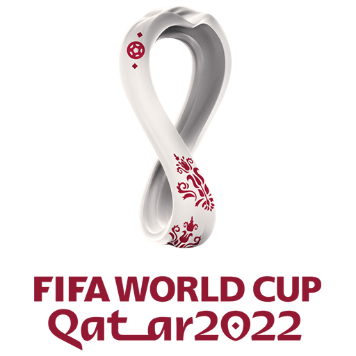
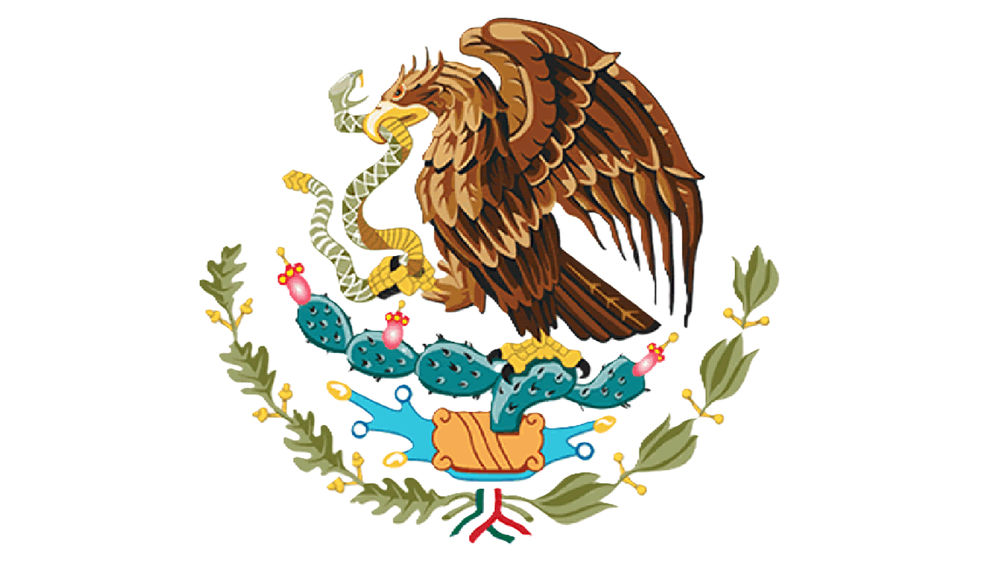

Grupo C
Pagina de inicio
Grupo A
Grupo B
Grupo D
Grupo E
Grupo F
Grupo G
Grupo H
Argentina
Sale de su grupo como el No. 1, gana los octavos de final, los cuartos de final y las semifinales, y se corona campeón al vencer en la final.
لا إله إلا الله محمد رسول الله
Arabia saudita
No logra avanzar a los octavos de final, quedando eliminada en la fase de grupos.

México
No logra avanzar a los octavos de final, quedando eliminada en la fase de grupos.
Polonia
Sale de su grupo como el No. 2, pero pierde en los octavos de final, quedando eliminada del torneo.